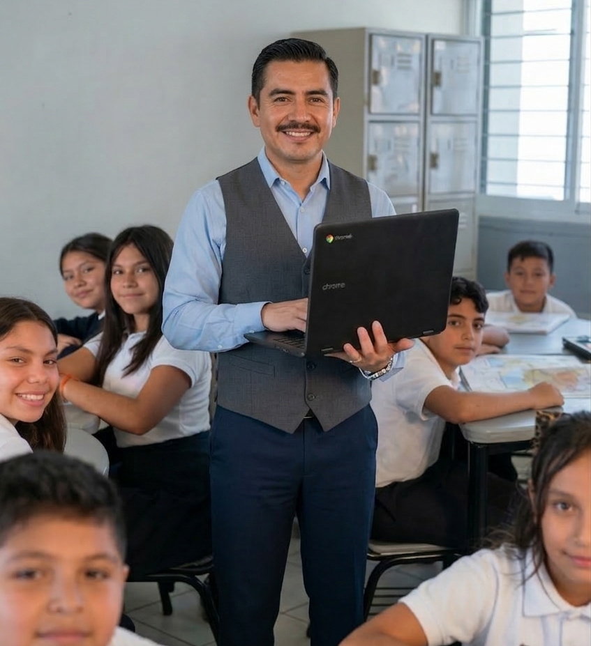
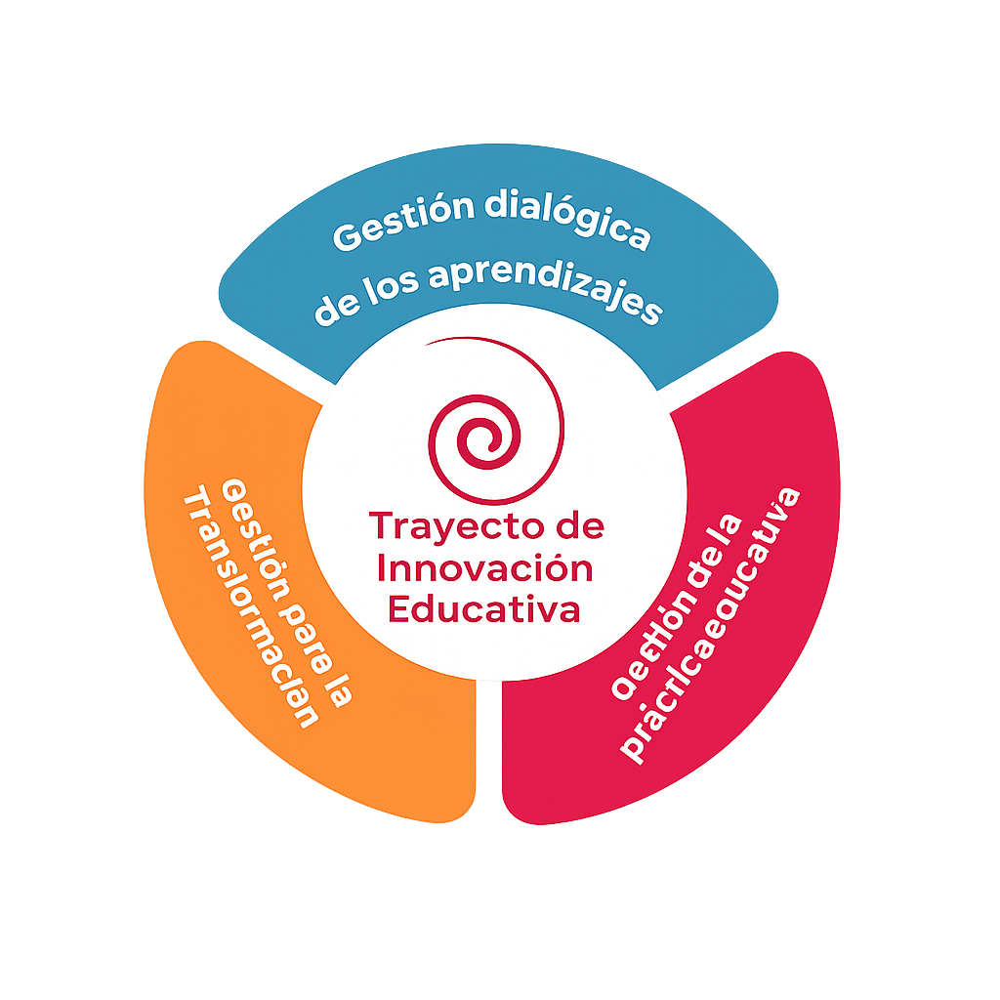
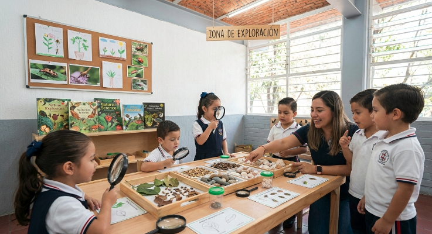
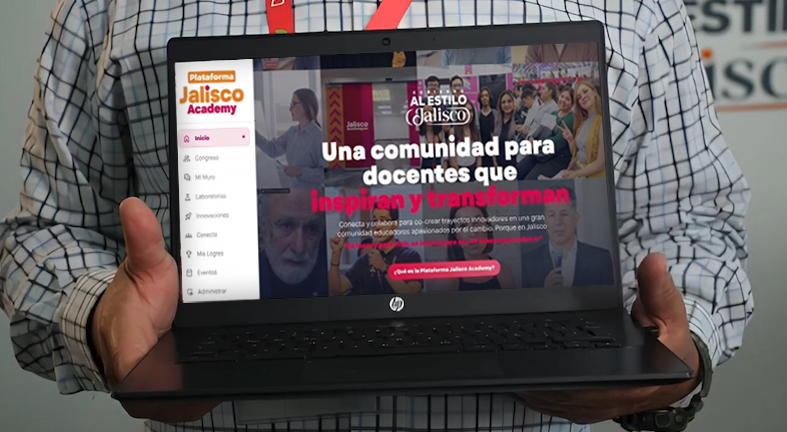
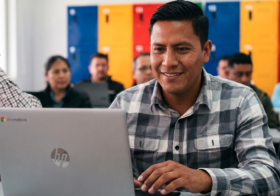

Identificar tu práctica
Reconocemos lo que ya haces con IA en tu aula, escuela o formación. Conoces la convocatoria, entras al programa y te presentamos a OlivIA, tu asistente para armar tu portafolio.
Sesión 1 · Miércoles 10 de junioTrayecto de Innovación Educativa con Inteligencia Artificial
No venimos a enseñarte IA. Venimos a ayudarte a mostrar lo que ya haces. Una convocatoria estatal para maestros, directivos y normalistas de Jalisco que ya integran Gemini, Canva u otras herramientas de IA en su práctica: te acompañamos a empaquetar, compartir y llevar tu trabajo al gran evento Jalisco Academy.

Se innova para existir, se innova para vivir, se innova para ser.
Alineado al Proyecto Educativo de Jalisco, el trayecto se compone de tres momentos para que cuentes tu práctica con IA: reconocer lo que ya haces, empaquetarlo con calidad y compartirlo con la comunidad docente de todo el estado.

Reconocemos lo que ya haces con IA en tu aula, escuela o formación. Conoces la convocatoria, entras al programa y te presentamos a OlivIA, tu asistente para armar tu portafolio.
Sesión 1 · Miércoles 10 de junioEmpaquetamos tu práctica en Canva profesional: portada, ficha visual, organizador de evidencias. Lo que ya haces se vuelve visible, tangible y compartible.
Sesión 2 · Miércoles 24 de junioGrabas tu video testimonial (60-90 seg), cierras el portafolio digital y lo publicas para toda la comunidad docente de Jalisco. 30 finalistas presentan en el gran evento Jalisco Academy.
Sesión 3 · Miércoles 8 de julioMaestros en servicio, directivos y alumnos de Normales que ya usan IA en sus aulas, escuelas y trayectos de formación inicial. Equipos de hasta 4 integrantes, no necesariamente del mismo centro de trabajo: se valoran los colectivos por zona, municipio o región.


Tres sesiones virtuales en vivo de 90 minutos cada una por Jalisco Academy, con grabación disponible. No es capacitación desde cero: es acompañamiento para mostrar lo que ya haces con IA.
Explicación a fondo de la convocatoria, calendario y entregables. Presentación de OlivIA, tu asistente virtual para estructurar tu portafolio a partir de la práctica que ya tienes.
Uso de Canva con IA aplicado al armado del portafolio digital: portada, ficha visual, infografía de proceso y organizador visual de evidencias. Sales de la sesión con tu portafolio iniciado.
Grabación de video testimonial de tu práctica (60-90 segundos), edición rápida, consejos de oratoria, cierre y publicación del portafolio. Entrega final: 22 de julio.
30 finalistas seleccionados —10 por cada categoría (Maestros, Directivos, Normalistas)— presentarán su práctica en el Congreso Educativo Internacional Jalisco Academy 2026 en dos modalidades complementarias: workshop con pitch breve + stand de exhibición durante todo el evento.

No te enseñamos IA desde cero — asumimos que ya la estás usando. Te damos las herramientas para empaquetar, narrar y compartir tu práctica con calidad profesional.
Gema oficial de la convocatoria. Te entrevista, te ayuda a articular lo que ya haces y genera el borrador de tu portafolio. Acompañamiento 1 a 1 con IA.
Magic Design, Magic Write, Dream Lab y presentaciones generadas por IA para armar portada, ficha visual, infografía de proceso y organizador de evidencias.
Testimonial de 60-90 seg grabado con celular y editado con IA. Consejos de oratoria y storyboard para contar tu práctica en un video potente y compartible.
Tu portafolio vive en Padlet como un espacio durable y compartible. Plantilla oficial con las 8 secciones mínimas: portada, ficha, contexto, proceso, impacto, ética, transferibilidad, video.
La rúbrica de 100 puntos con 5 dimensiones (pertinencia, evidencia, impacto, ética, transferibilidad) se publica íntegra desde el día uno. Cero sorpresas, cero favoritos.
Privacidad de menores, atribución, mirada crítica y decisiones pedagógicas para que la IA no sustituya el pensamiento humano en tu aula.
Individual o hasta 4 integrantes. Los integrantes no tienen que ser del mismo centro de trabajo: se valoran los colectivos por zona, academia, municipio o región.
Los 30 finalistas (10 por categoría) presentan en workshop + stand durante el Congreso Educativo Internacional Jalisco Academy 2026, en octubre.
Constancia oficial con valor curricular para todos los participantes que completen las 3 sesiones y entreguen su portafolio completo.
Al completar las tres sesiones y entregar tu portafolio digital recibirás una constancia oficial expedida por la Secretaría de Educación del Estado de Jalisco, con valor curricular aplicable a procesos de formación continua y carrera docente.
Requisito de entrada: tener una práctica con IA ya ejecutada (no ideas ni planes). Completas el formulario con tus datos, adjuntas 2 a 3 evidencias gráficas y recibes acceso a las tres masterclasses y a OlivIA, tu asistente.
¿Dudas? alfadireccion@jalisco.gob.mx